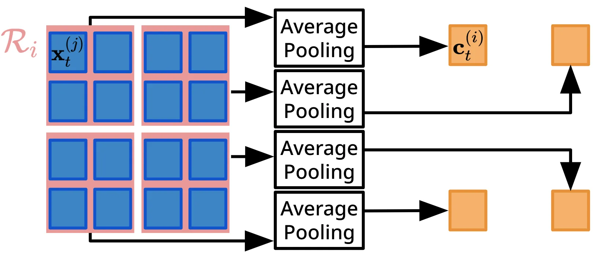

FFVO：面向长时程视觉里程计的前馈位姿解码器
FFVO: A Feedforward Pose Decoder for Long-Horizon Visual Odometry
FFVO 将联合重建网络改造成专门的相机位姿解码器，目标是降低长视频中的抖动与漂移。原文在 Waymo Open Dataset、KITTI 和内部大规模基准上报告优于现有前馈方法；FFVO-Long 还以 120 帧片段加轨迹级后优化处理公里级序列。
作者、单位与技术谱系 · Research context
作者与单位
研究脉络
- VGGT / π3方法上游关系：论文将 FFVO 放在前馈几何与相机运动联合预测谱系中，并明确比较 π3 的长时程抖动问题。[论文官方 HTML]
- FFVO本篇推进关系：从联合重建转向 pose-specialized decoder，并加入层级时序聚合与中间轨迹监督。[论文官方 HTML]
合作网络
- Waymo—University of WashingtonWaymo LLC → University of Washington关系：共同署名/作者单位[论文官方 HTML]
- FFVO—KITTI/WODFFVO → Waymo Open Dataset 与 KITTI关系：公开实验依赖[论文官方 HTML]
作者和单位是原文事实；技术脉络是基于论文引用与公开项目页的来源化解读；未据此推断导师或师生关系。
方法本质拆解 · What actually changed
是不是微调？
论文将联合重建架构改造成 pose-specialized adaptation，并训练专门的 camera pose branch；具体冻结/解冻策略和训练 epoch 未在当前证据摘录中确认。
有没有额外约束？
新增 intermediate local-trajectory supervision，对中间层施加相对位姿损失以约束局部运动一致性；它直接作用于轨迹稳定性，而不是外接 GNSS 或地图硬约束。
推理/后端到底做了什么？
推理阶段使用局部窗口到全局的层级时序聚合；FFVO-Long 还按 120 帧分段并执行轨迹级后优化，因此并非完全没有后端处理。
方法本质是什么？
论文将联合重建架构改造成 pose-specialized adaptation，并训练专门的 camera pose branch；具体冻结/解冻策略和训练 epoch 未在当前证据摘录中确认。 该设计把可观测证据转成几何约束或时序合并动作，再作用于位姿、结构或表征输出。
输入视频与局部时序证据 + 层级解码和局部轨迹约束 +（长序列时）分段后优化 → 降低位姿抖动与漂移。

动机与问题Motivation
动机与问题
单次前馈重建同时预测结构和运动，但长时程位姿会受长上下文歧义、重复纹理和计算成本影响。论文指出 π3 的局部几何虽准确，却会出现跨帧 pose jitter，导致静态结构重复和轨迹漂移。
方法Method
方法总览
模型使用紧凑 camera-token 做时序聚合，并采用 local-to-global 层级解码器。中间层加入局部轨迹监督，使短程稳定性与序列级整合分工。
关键技术细节
局部窗口注意力先聚合短程运动线索，再通过层级结构整合长程上下文。FFVO-Long 将每段 120 帧的预测交给轨迹级后优化；这一步属于推理后处理，不等同于训练时全局 BA。

实验Experiments
实验设置
实验覆盖 Waymo Open Dataset、KITTI 以及大规模私有基准；论文首页列出 KITTI-00、01、02、05、07、08，里程分别为 3724、2453、5067、2205、649、3222 m。指标围绕位姿精度、轨迹漂移与重建稳定性，并与前馈重建方法及 π3 对比。
实验数字与比较
论文明确给出 FFVO-Long 使用 120 帧片段，并在 KITTI 六条序列上覆盖 649–5067 m 的路线长度；这些是实验协议数字。相对 π3 的具体 ATE/漂移表格数值需从 HTML 表格逐项复核，当前标记为待核验，不能将“greatly reduces”转成未报告的百分比。
消融/失败边界
作者分别讨论 camera-token、层级 local-to-global 解码和 intermediate trajectory supervision 的作用；去掉其中任一模块的精确表格变化需核对原文消融表，当前为待核验。重复纹理、超长上下文、片段拼接误差和内部数据分布变化都可能削弱结论。
局限与迁移Limitations & Transfer
局限与待核验
作者明确承认长视频仍需要在效率、上下文和稳定性之间折中，并把 FFVO-Long 的轨迹级后优化作为补充。不同基准上的精确误差、训练数据规模、推理延迟和消融数值仍需按原文表格核验。
与你研究路线的关系
可迁移模块是“局部几何证据→全局位姿整合”的分层接口，适合接入可靠状态估计中的短窗滤波与稀疏关键帧校正。下一步可在相同 120 帧预算下比较纯前馈、局部优化和带不确定性门控的轨迹拼接，并报告漂移、延迟和失败率。